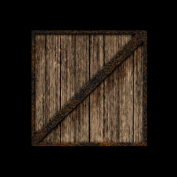

这一节做一些简单的交互，并认识一下不同的纹理过滤类型。
效果如图6。

图6
用四个方向键控制绕x轴和绕y轴的旋转，Page Up和Page Down键控制z轴方向上的放大与缩小，用F键在三种纹理过滤类型间切换。
var crateTextures = Array();
function initTexture()
{
var crateImage = new Image();
for(var i = 0; i < 3; i ++)
{
var texture = gl.createTexture();
texture.image = crateImage;
crateTextures.push(texture);
}
crateImage.onload = function()
{
handleLoadedTexture(crateTextures);
}
crateImage.src = "/Public/image/crate.gif";
}
与上一节不同的是，我们创建了三个纹理对象，存到了一个数组里，纹理换成了一个板条箱的图片。这次传给handleLoadedTexture()的是一个数组。
function handleLoadedTexture(textures)
{
gl.pixelStorei(gl.UNPACK_FLIP_Y_WEBGL, 1);
gl.bindTexture(gl.TEXTURE_2D, textures[0]);
gl.texImage2D(gl.TEXTURE_2D, 0, gl.RGBA, gl.RGBA,
gl.UNSIGNED_BYTE, textures[0].image);
gl.texParameteri(gl.TEXTURE_2D,
gl.TEXTURE_MAG_FILTER, gl.NEAREST);
gl.texParameteri(gl.TEXTURE_2D,
gl.TEXTURE_MIN_FILTER, gl.NEAREST);
gl.bindTexture(gl.TEXTURE_2D, textures[1]);
gl.texImage2D(gl.TEXTURE_2D, 0, gl.RGBA, gl.RGBA,
gl.UNSIGNED_BYTE, textures[1].image);
gl.texParameteri(gl.TEXTURE_2D,
gl.TEXTURE_MAG_FILTER, gl.LINEAR);
gl.texParameteri(gl.TEXTURE_2D,
gl.TEXTURE_MIN_FILTER, gl.LINEAR);
gl.bindTexture(gl.TEXTURE_2D, textures[2]);
gl.texImage2D(gl.TEXTURE_2D, 0, gl.RGBA, gl.RGBA,
gl.UNSIGNED_BYTE, textures[2].image);
gl.texParameteri(gl.TEXTURE_2D,
gl.TEXTURE_MAG_FILTER, gl.LINEAR);
gl.texParameteri(gl.TEXTURE_2D,
gl.TEXTURE_MIN_FILTER, gl.LINEAR_MIPMAP_NEAREST);
gl.generateMipmap(gl.TEXTURE_2D);
gl.bindTexture(gl.TEXTURE_2D, null);
}
对传进来的纹理对象数组中三个对象使用了三种参数组合。 textures[0]和上一节一样，用的gl.NEAREST。
使用纹理坐标中最接近的一个像素，作为需要绘制的像素的颜色。边界分明，纹理图片太小的话会有马赛克的感觉。
使用纹理坐标中最接近的若干个颜色，通过加权平均得到需要绘制的像素的颜色。
LINEAR方式在纹理放大的时候比NEAREST效果好一些，但是在缩小的时候并没有明显差别，都会产生锯齿。
可以在我们这一节做出的交互页面上试试看，木板与木板之间有细缝，当缩小到大约1/10的时候，NEAREST和LINEAR模式都会在某些角度看上去一些细缝消失了。这个很好理解，当纹理需要缩小到一个尺寸的时候，需要绘制的模型上的两个点，换算到纹理上的位置，可能会刚好跨过细缝。
在纹理需要缩小比较多的情况下，如果想让LINEAR解决这个问题，就需要取更多的像素算均值，运算量会变大很多。MIPMAP方法是对原纹理生成了一个MIPMAP图，这是个“图像金字塔”，即图像的1/2、1/4、1/8...等多个图，算一下等比数列求和会知道，至多只多占了一倍的空间，这在算法上是常数级的，可以接受。当然，在生成MIPMAP的时候图片已经做抗锯齿处理了，这是一次性的，总比在即时演算的时候反复做处理好得多。于是在纹理需要缩小时，选择最接近的纹理尺寸再做LINEAR处理。需要生成MIPMAP图，于是有了这句gl.generateMipmap(gl.TEXTURE_2D)。
var xRot = 0;
var xSpeed = 0;
var yRot = 0;
var ySpeed = 0;
var z = -5.0;
var filter = 0;
定义与旋转、缩放、纹理过滤类型标记有关的全局变量。
var currentlyPressedKeys = {};
function handleKeyDown(event)
{
currentlyPressedKeys[event.keyCode] = true;
if(String.fromCharCode(event.keyCode) == "F")
{
filter += 1;
if(filter == 3)
{
filter = 0;
}
}
}
function handleKeyUp(event)
{
currentlyPressedKeys[event.keyCode] = false;
}
function handleKeys()
{
if(currentlyPressedKeys[190])
{
//"."/">"句号键
z -= 0.05;
}
if(currentlyPressedKeys[188])
{
//","/"<"逗号键
z += 0.05;
}
if(currentlyPressedKeys[65])
{
//A
ySpeed -= 1;
}
if(currentlyPressedKeys[68])
{
//D
ySpeed += 1;
}
if(currentlyPressedKeys[87])
{
//W
xSpeed -= 1;
}
if(currentlyPressedKeys[83])
{
//S
xSpeed += 1;
}
}
function tick()
{
//...
drawScene();
}
上面是对键盘事件的处理逻辑。键盘上每个按键有自己的编码，网上可以查到keycode表。用一个数组currentlyPressedKeys标记每个按键的按下状态，它就像个字典一样。按下事件标记，松开事件取消标记。handleKeys()放在tick()中就会在每个周期运行一次去查currentlyPressedKeys这个“字典”完成需要的操作。
“F”键控制纹理过滤类型的选择，我们想让它按一下变一次，就在keydown里执行。改变速度和缩放我们想按着不松手就持续变，就放到tick周期里执行。并且处理方向键的时候都用了if而没有else或return，这样就允许了它们并行执行。想想在打赛车游戏的时候，转弯就必须松油门还不能同时刹车甩尾的话，感觉一定很糟糕。
function webGLStart()
{
//...
$(document).keydown(handleKeyDown);
$(document).keyup(handleKeyUp);
}
handleKeys()是tick()控制的，但handleKeyDown()和handleKeyUp()却是我们“一厢情愿”想让事件触发的，这就需要把他们绑定到JS的事件去，jQuery可以像上面这样写，keydown和keyup是jQuery的真实事件，我们让发生这些事件的时候执行想要的函数。
function drawScene()
{
//...
mat4.translate(mvMatrix, mvMatrix, [0.0, 0.0, z]);
mat4.rotate(mvMatrix, mvMatrix, degToRad(xRot), [1, 0, 0]);
mat4.rotate(mvMatrix, mvMatrix, degToRad(yRot), [0, 1, 0]);
//...
gl.bindTexture(gl.TEXTURE_2D, crateTextures[filter]);
//...
}
drawScene这一步我们已经轻车熟路了，按照预想的方式放大缩小、运动，三个纹理对象设置为选中的那一个。